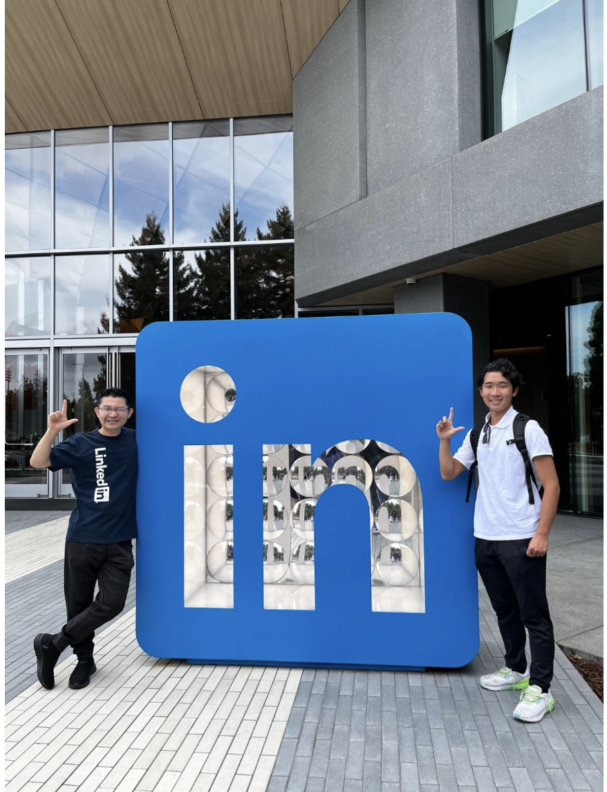
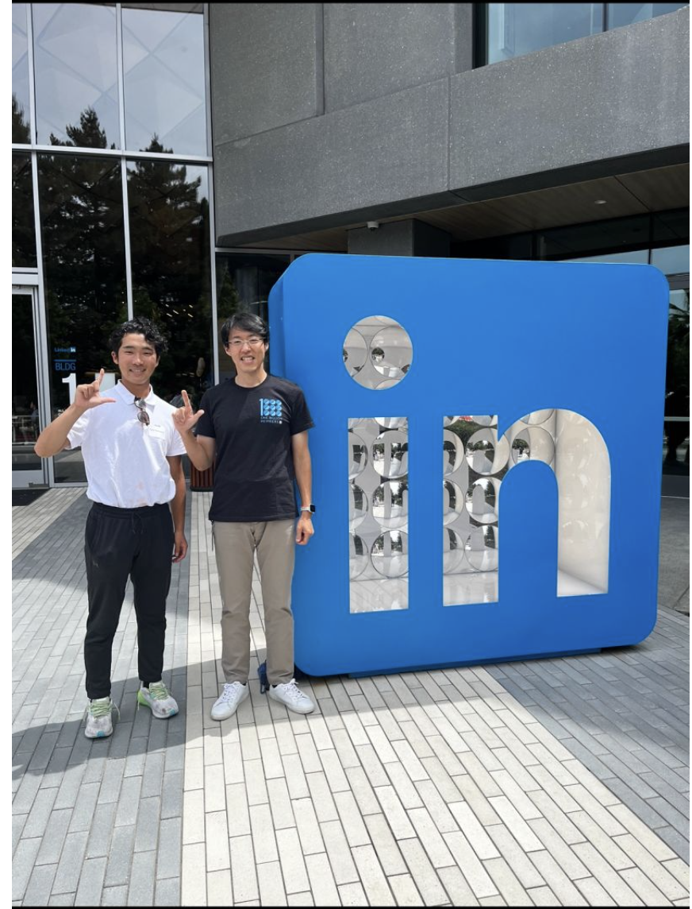
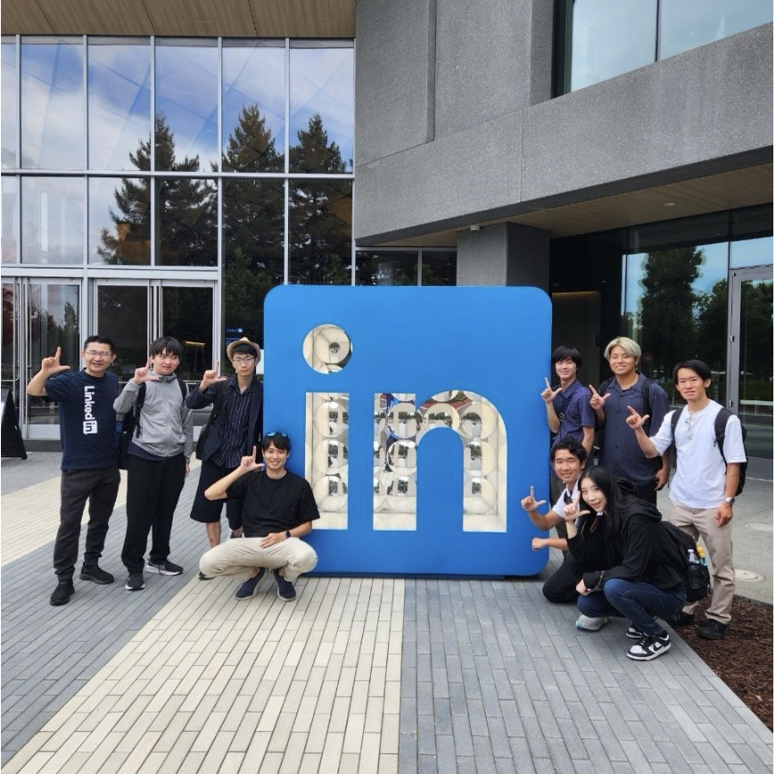
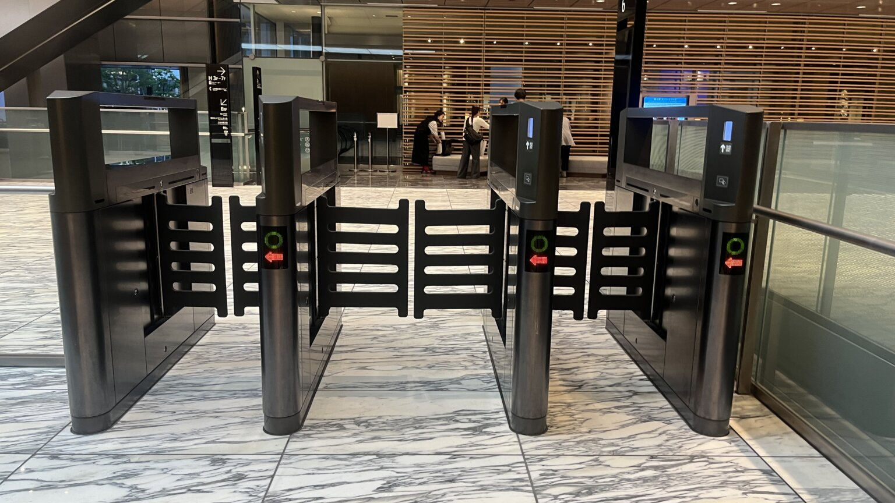

Entry
まずは、
ここから。
第6期生はもちろん、過去の期や、大学生・社会人を問わず、世界一周大学に関わる方なら参加できます。
右のフォームから説明会に申し込む
登録メールに届くZoomへ参加
当日、メールアドレスを使ってLinkedInに登録
フォームが表示されない場合は こちらから申し込む ↗
Online orientation · 2026.10.15
世界一周大学で得た経験は、まだ見ぬ人や仕事につながる。 はじめてのLinkedInを、みんなで一緒に始める1時間です。
説明会に申し込むWhy LinkedIn?
LinkedInは、仕事やキャリアをきっかけに、人と人がつながるSNSです。
Instagramが日常や写真を共有する場所なら、LinkedInは経験・得意なこと・挑戦を伝える場所。 就活や転職だけでなく、仲間、メンター、仕事、プロジェクトとの出会いが生まれます。
旅、フィールドワーク、ボランティア。履歴書に収まりきらない挑戦も、自分の物語として残せます。
業界や地域を越えて、先輩、社会人、経営者、世界で働く人たちと直接つながる入口になります。
発信と対話を重ねるほど、インターン、仕事、登壇、コラボレーションの可能性が広がります。

Two connected events
まずオンラインでLinkedInを知り、アカウントを作る。 その先には、10月26日のLinkedInオフィスイベントが待っています。
LinkedInの基本を知り、メールアドレスでアカウントを作成します。
19:30–21:30。六本木・東京ミッドタウンのLinkedIn Japanオフィスへ。石坂誠（Makoto Ishizaka）さんと山元が一緒に講演する予定です。



Navigator
「LinkedInって意識高そう」「何を書けばいいかわからない」。 そんな状態からで大丈夫です。
LinkedIn本社、日本オフィス、Student Club。石坂誠さんをはじめ、 たくさんの方に教えてもらいながら、僕自身がつながりを広げてきました。 特別な肩書ができてからではなく、今の挑戦を伝えるところから一緒に始めましょう。
Real experience
本社訪問、日本オフィス、Student Club、企業訪問。 LinkedInでつながった人たちに教わりながら、僕自身がたくさんの機会を受け取ってきました。
運をつかむ
＝ 準備の質 × 機会の数 LinkedIn本社訪問で学び、今も大切にしている言葉
サンフランシスコの本社と日本オフィスを訪問し、LinkedInで働く方々からキャリア、学び続ける姿勢、機会をつかむ準備について直接学びました。
石坂誠（Makoto Ishizaka）さんやシアトル経産会のみなさんと、シアトル・サンフランシスコで企業訪問。日本オフィスでも学び、10月26日は同じオフィスで一緒に講演します。LinkedInの使い方だけでなく、人との信頼を次の出会いへつなげる姿勢を教えていただきました。
学生向けイベントへの参加・協力を重ね、自分のプロダクトをイベント景品として提供していただくなど、オンラインのつながりがリアルな共創へ広がる経験をしてきました。
Personal branding
1時間ですべては完成させません。まずは、この3つが見えるプロフィールを目指します。
現在の所属、役割、興味がひと目で伝わる。
旅や挑戦を、行動と学びの物語として残す。
会いたい人や次の挑戦につながる意思を示す。
60-minute program
Next adventure
10月26日は、六本木・東京ミッドタウン・タワー8階のLinkedIn Japanオフィスで学ぶ特別な2時間。 僕は以前、このオフィスを訪れました。次は、みんなと一緒に「中」へ入ります。
当日は、LinkedIn Japanの 石坂誠（Makoto Ishizaka）さん と一緒に講演する予定です。オンラインでLinkedInを知ったあと、リアルなオフィスでつながりの先を体験しましょう。
2026年10月26日（月）19:30–21:30
LinkedIn Japanオフィス（六本木）｜ハイブリッド開催予定
参加条件：LinkedInアカウント作成済み
Where we're going




オフィス内の参考写真： MICE TIMES ONLINE「リンクトイン・ジャパンでMICEを探る」 （2024年取材）より
Your stories matter
仲間との旅、想定外の出来事、挑戦した瞬間。 写真の奥にある経験と言葉をLinkedInに残せば、まだ会ったことのない人にも、あなたらしさが伝わります。


Entry
第6期生はもちろん、過去の期や、大学生・社会人を問わず、世界一周大学に関わる方なら参加できます。
右のフォームから説明会に申し込む
登録メールに届くZoomへ参加
当日、メールアドレスを使ってLinkedInに登録
フォームが表示されない場合は こちらから申し込む ↗
FAQ
もちろんです。この説明会は、初めての方がLinkedInを知り、その場で登録するための時間です。
はい。過去の期を含め、世界一周大学に関わる大学生・社会人のみなさんが対象です。
パソコンまたはスマートフォンと、LinkedIn登録に使えるメールアドレスをご用意ください。
10月26日の参加にはLinkedInアカウントが必要です。初めての方は、10月15日の説明会で一緒に登録することをおすすめします。